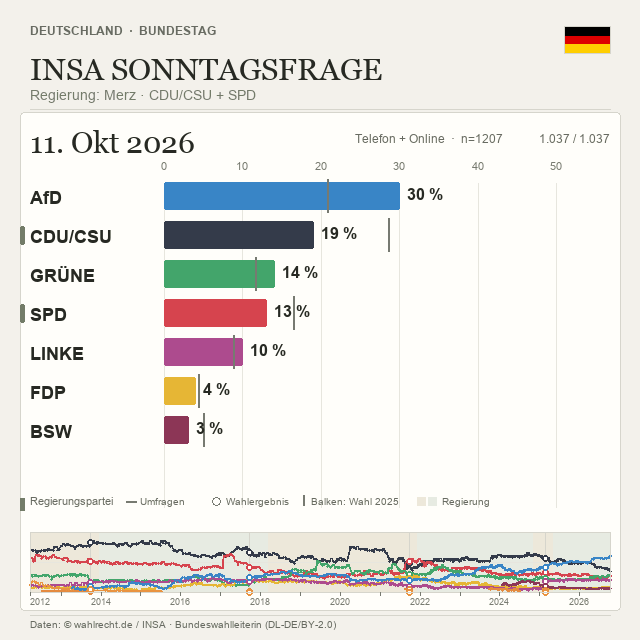

Germany · An atlas of political sentiment
The shape of
public opinion.
A clearer view of German politics over time. Explore election polls, trace shifting party support, and see the governments behind the numbers.
Explore the interactive atlasBundestag & all 16 states · Chart interface in German
The long viewPolls / elections / governments

Preview of the interactive chartDiscover the data ↗
01 / Perspective
One country. Seventeen views.
Move between the Bundestag and all 16 state parliaments to explore national and regional sentiment.
02 / Movement
Politics, in motion.
Play through the timeline, pause at a turning point, or filter by institute and survey method.
03 / Context
Beyond the polling number.
Compare polls with election results and government periods. Every view keeps its sources close.